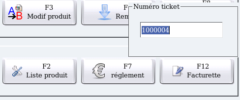
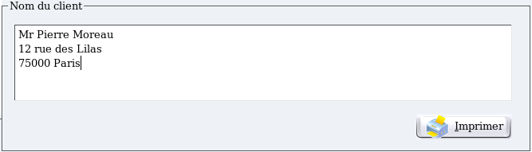

~ Laurux.Pos ~

~ Laurux.Pos ~ |
|
|
|
Impression d'une facturette.
Laurux.Pos peut imprimer une facturette sur demande par la touche F12.
Cette fonction va afficher le dernier numéro de
ticket utilisé cependant il est possible de saisir n'importe quel
numéro de ticket imprimé dans la journée. L'impression de la bande Z
remettant à zéro la table des tickets, il n'est pas posssible
d'imprimer un ticket antérieur.

Après la validation du numéro de ticket, on a deux possibilités. Si le ticket appelé est sur un client en compte alors le bon de caisse s'imprimera immédiatement avec les coordonnées du compte mémorisé dans Laurux. Sinon, une fenêtre s'ouvrira pour permettre la saisie des noms et adresses du client.

L'impression donnera le document suivant.
----------------------------------------------------------------------------------------------------------------------